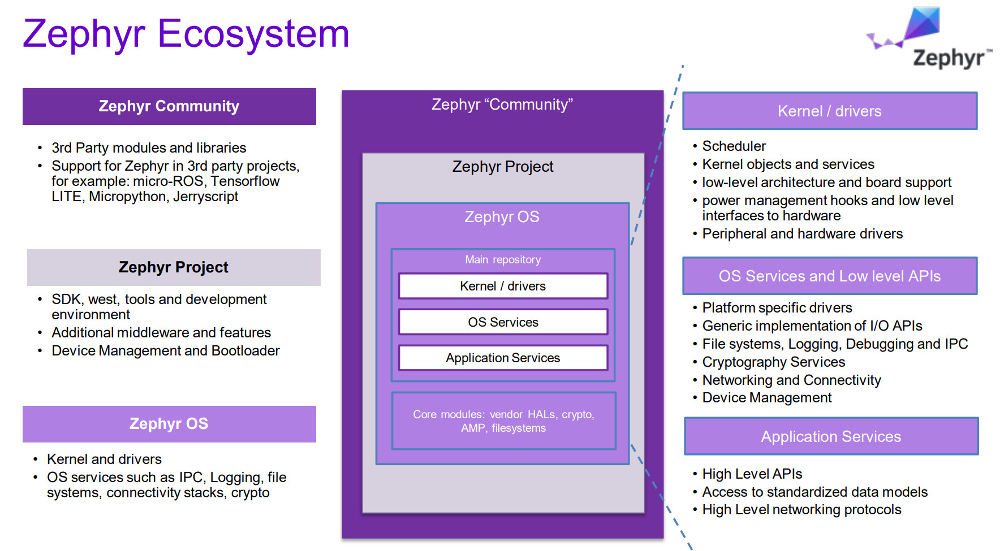
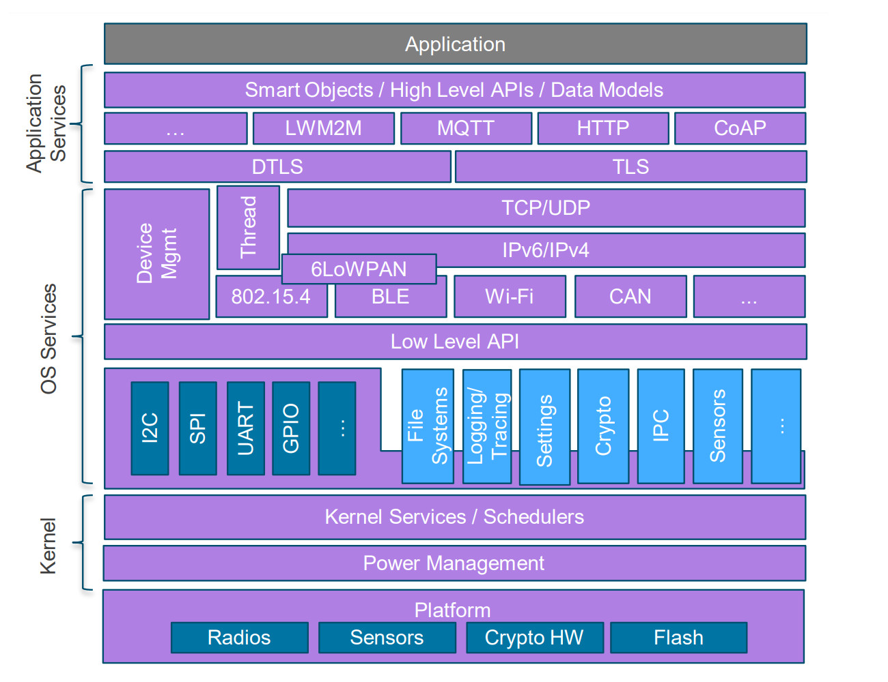
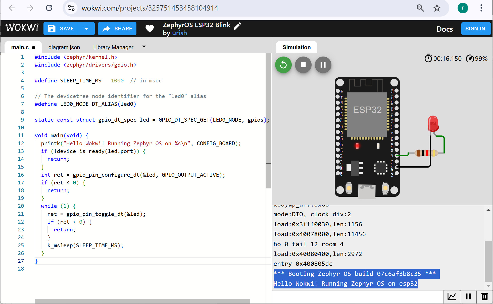
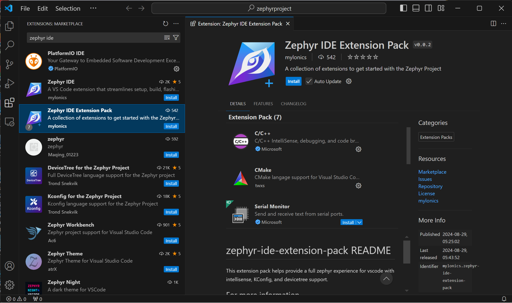
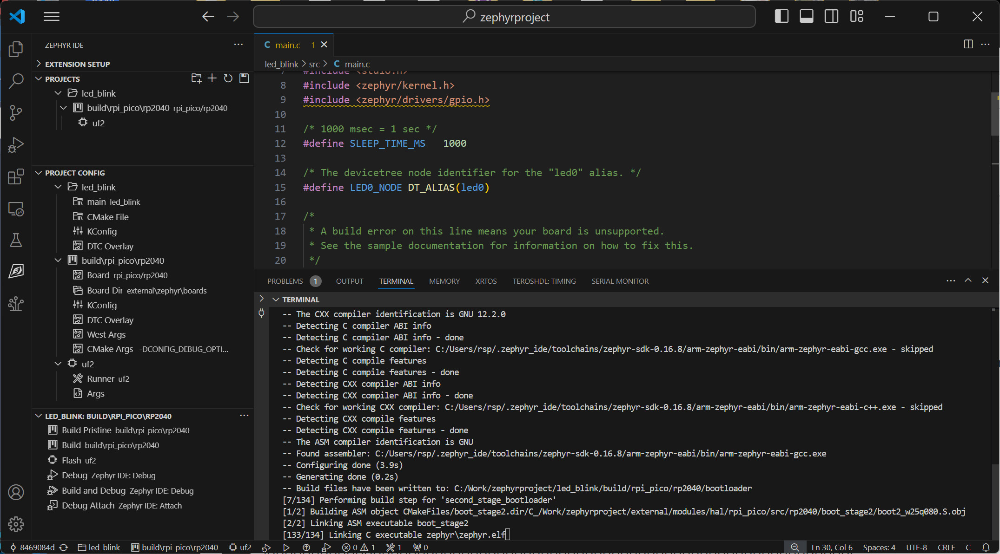
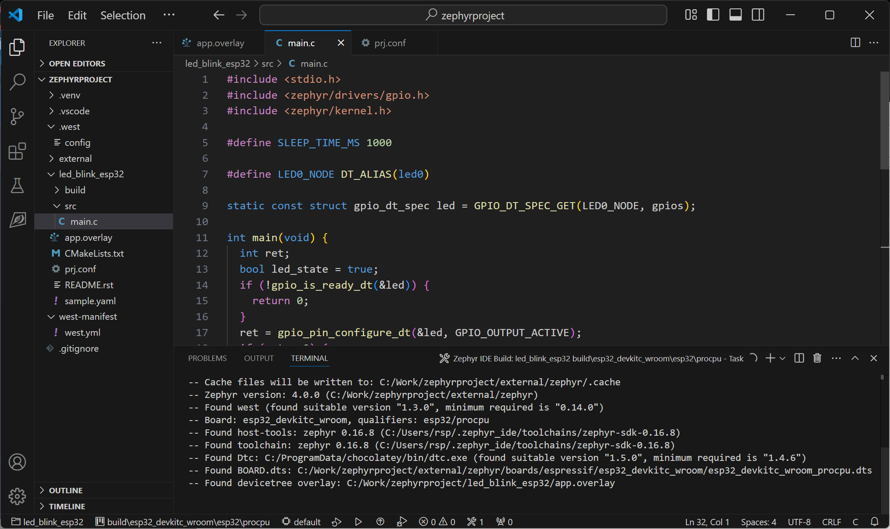

แนะนำ Zephyr Real-Time Operating System (RTOS)#
▷ Zephyr RTOS#
Zephyr (ออกเสียงว่า "เซฟเฟอร์" ZEF-er) เป็นระบบปฏิบัติการเรียลไทม์ (Real-Time Operating System: RTOS) และเป็นซอฟต์แวร์ประเภทโอเพนซอร์สที่ถูกพัฒนาขึ้นเพื่อรองรับการใช้งานสำหรับระบบสมองกลฝังตัว (Embedded Systems) และอุปกรณ์ประเภท Internet of Things (IoT) ซึ่งมีทรัพยากรในระดับฮาร์ดแวร์ที่ค่อนข้างจำกัด
ประวัติความเป็นมา
- Zephyr RTOS มีจุดเริ่มต้นมาจากระบบปฏิบัติการเรียลไทม์ที่มีชื่อว่า Virtuoso RTOS ซึ่งพัฒนาโดยบริษัทในเบลเยียม
- ต่อมาในปี 2011 ระบบนี้ถูกซื้อกิจการโดยบริษัท Wind River Systems และได้เปลี่ยนชื่อเป็น Rocket RTOS
- ในปี 2015 ระบบถูกเผยแพร่เป็นโอเพนซอร์ส และในปี 2016 ได้เข้าร่วมเป็นโครงการหนึ่งของ Linux Foundation ภายใต้ชื่อใหม่คือ Zephyr และนับเป็นจุดเริ่มต้นที่เป็นทางการของโครงการ Zephyr RTOS
- ในขณะที่เขียนบทความนี้ เวอร์ชันล่าสุดของ Zephyr RTOS คือ v4.0.0

รูป: Zephyr Ecosystem (Source: zephyr.org)
จุดเด่นของ Zephyr RTOS ที่พอจะสรุปมาเป็นตัวอย่าง มีดังนี้
- เป็นซอฟต์แวร์ประเภทโอเพนซอร์ส (Apache 2.0 license)
- รองรับสถาปัตยกรรมของซีพียูที่หลากหลาย เช่น ARM, x86, RISC-V, MIPS, Xtensa และอื่น ๆ และบอร์ดไมโครคอนโทรลเลอร์หลายร้อยรายการ (สามารถค้นดูรายการได้จาก "Supported Boards and Shields")
- รองรับการทำงานของซีพียูแบบแกนเดียวและหลายแกน (Multi-core system support)
- มีผู้สนับสนุนหลักจากบริษัทใหญ่ เช่น Intel, Nordic Semiconductor, NXP และอื่น ๆ
- มีการพัฒนาอย่างต่อเนื่อง เช่น ดูจากจำนวนผู้มีส่วนร่วมและจำนวน Git Commits ในแต่ละเดือน
- มีการดูแลซอฟต์แวร์และสนับสนุนในระยะยาว ในรูปแบบของ Long Term Support (LTS)
- รองรับการทำงานของ Secure boot เช่น MCUboot secure bootloader
Zephyr RTOS มีไลบรารีที่ครอบคลุมการทำงานหลากหลาย เช่น:
- การเชื่อมต่อเครือข่าย:
- Bluetooth 5.0+ & BLE
- Wi-Fi / Ethernet (IPv4/IPv6 stack)
- CANbus
- โปรโตคอลสำหรับงาน IoT:
- CoAP & MQTT
- IEEE 802.15.4 / OpenThread & 6LoWPAN
- LoRa
- การรองรับ USB 2.0 และ USB-C
- การอัปเกรดเฟิร์มแวร์แบบ OTA (Over-the-Air upgrade)
- การรองรับ Secure Boot: เช่น MCUboot secure bootloader

รูป: Zephyr Architecture (Source: zephyr.org)
▷แนวทางและหัวข้อการเรียนรู้สำหรับ Zephyr RTOS#
สำหรับผู้ที่สนใจ ก็มีตัวอย่างหัวข้อที่สำคัญมานำเสนอ และเป็นแนวทางสำหรับการเริ่มต้นศึกษาและใช้งาน Zephyr RTOS ดังนี้
- การติดตั้งและใช้งานซอฟต์แวร์ อย่างเช่น West, CMake และ Zephyr SDK
- การตั้งค่าใช้งานด้วย Kconfig และ Devicetree / device tree overlay สำหรับ Zephyr RTOS project
- หลักการทำงานของ Zephyr Kernel & Kernel Services
- การเขียนโปรแกรมแบบ Multi-threading ด้วย Zephyr Kernel
- การจำแนกประเภทของ "เธรด"
- เธรดของระบบ (System Threads) เช่น Main Thread และ Idle Thread
- การสร้าง User Threads
- การกำหนดคุณสมบัติของ Threads เช่น Thread Stack Size และ Thread Priority
- สถานะการทำงานของเธรด (Thread States) และการควบคุมหรือเปลี่ยนสถานะของเธรด
- การสื่อสารกันระหว่างเธรด (Inter-Thread Synchronization & Communication) เช่น
- Semaphores
- Mutexes
- SpinLocks
- Critical Sections
- Events / Event Bits
- Message Queues
- Mailboxes
- Pipes
- การจัดการหน่วยความจำ (Memory Management)
- การจัดการอินเทอร์รัพท์ (Interrupt Handling)
- การจัดการเวลาของระบบและการใช้งาน Software Timers
- การจัดการและการประหยัดพลังงาน (Low Power Management)
▷ การเลือกบอร์ดไมโครคอนโทรลเลอร์สำหรับ Zephyr RTOS#
สำหรับผู้เริ่มต้นการเลือกบอร์ดไมโครคอนโทรลเลอร์สำหรับการนำมาทดลองและใช้งานร่วมกับ Zephyr RTOS ก็เป็นอีกหนึ่งประเด็นที่สำคัญ ตัวอย่างบอร์ดไมโครคอนโทรลเลอร์ที่มีราคาไม่แพง และนำมาใช้ได้ เช่น
- Raspberry Pi Pico / Pico-W (RP2040)
- Micro:bit v1 (nRF51822) & v2 (nRF52833)
- ESP32 Boards (Espressif ESP32 SoC)
- STM32 Nucleo Boards
ตัวอย่างบอร์ดไมโครคอนโทรลเลอร์ที่นำมาใช้กับ Zephyr ได้
- Espressif EPS32 / S3 (dual-core) / ESP32-C3 (single-core, RISC-V):
esp32c3_devkitc,esp32s3_devkitc,esp32c3_superminixiao_esp32s3,xiao_esp32c6,xiao_esp32c3
- *Raspberry Pi RP2040 / RP2350: Pico / W & Pico 2 W:
rpi_pico,rpi_pico2,xiao_rp2040
- Nordic nRF52811 / nRF52833 / nRF52840:
bbc_microbit,bbc_microbit_v2,promicro_nrf52840
- STMicroelectronics STM32:
nucleo_f401re,nucleo_f446re,nucleo_l432kc
- **Renesas RA4M1:
arduino_uno_r4
รายการบอร์ดทั้งหมด สามารถดูได้จากการทำคำสั่ง west boards
หากเลือกใช้บอร์ด ESP32 ก็มีซอฟต์แวร์อย่างเช่น Wokwi ให้ทดลองเขียนโค้ดในเบื้องต้น และสามารถจำลองการทำงานของโปรแกรมเสมือนจริงได้ โดยใช้เว็บเบราว์เซอร์และยังไม่ต้องติดตั้งซอฟต์แวร์ของ Zephyr ในเครื่องคอมพิวเตอร์ของผู้ใช้

รูป: ตัวอย่างการเขียนโค้ด Zephyr-ESP32 และจำลองการทำงานด้วย Wokwi
ตัวอย่างโค้ดสำหรับ ESP32 ซึ่งสาธิตการสร้าง "เธรด" เพื่อทำให้ LED กระพริบด้วยอัตราคงที่
#include <stdio.h>
#include <zephyr/kernel.h>
#include <zephyr/drivers/gpio.h>
// Use the led0 alias for the onboard LED
#define LED0_NODE DT_ALIAS(led0)
static const struct gpio_dt_spec led = GPIO_DT_SPEC_GET(LED0_NODE, gpios);
#define SLEEP_TIME_MS (1000)
#define THREAD_STACK_SIZE (512)
#define THREAD_PRIORITY (5)
void led_blink_func(void *, void *, void *);
K_THREAD_DEFINE(led_blink_tid, THREAD_STACK_SIZE,
led_blink_func, NULL, NULL, NULL,
THREAD_PRIORITY, 0, 0);
void main(void) {
printk("Zephyr OS on %s\n", CONFIG_SOC);
while(1) {
k_sleep(K_FOREVER); // The main thread sleeps forever
}
}
void led_blink_func(void *p1, void *p2, void *p3) {
int value, state = 0;
if (gpio_pin_configure_dt(&led, GPIO_OUTPUT_ACTIVE) < 0) {
return;
}
for(;;) {
(void) gpio_pin_set_dt(&led, state^= 1);
printk("LED toggle: %d\n", state );
k_msleep(SLEEP_TIME_MS);
}
}
ซอฟต์แวร์อีกตัวเลือกหนึ่งที่แนะนำให้ใช้งานคือ VS Code IDE + Zephyr Extension Pack

รูป: VS Code IDE + Zephyr Extension Pack

รูป: ตัวอย่างการใช้งาน VS Code IDE + Zephyr สำหรับบอร์ด Raspberry Pi Pico (RP2040)

รูป: ตัวอย่างการใช้งาน VS Code IDE + Zephyr สำหรับบอร์ด ESP32
▷ กล่าวสรุป#
บทความนี้นำเสนอเนื้อหาในเบื้องต้นเกี่ยวกับระบบปฏิบัติการเวลาจริง ที่มีชื่อว่า Zephyr RTOS ซึ่งถือว่าเป็นตัวเลือกที่น่าสนใจ และเป็นอันดับต้น ๆ สำหรับระบบปฏิบัติการ RTOS ที่เป็น Open Source
แหล่งข้อมูลอ้างอิงและศึกษาเพิ่มเติม
- Zephyr Documentation
- Zephyr Documentation (PDF)
- Git Repository for the Zephyr Project
- แนะนำการใช้งาน Zephyr RTOS แบบ CLI
This work is licensed under a Creative Commons Attribution-ShareAlike 4.0 International License.
Created: 2024-12-14 | Last Updated: 2025-10-30